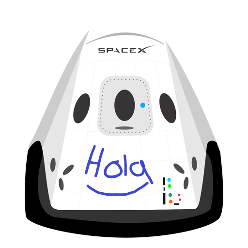

Tu blog de cabecera
Aquí inicia la historia de un gran proyecto
Y este es el párrafo de inicio donde vamos a explicar las cosas increíbles que se pueden hacer con ramas.

Los blogs son la mejor forma de compartir información y tus ideas. Mucho más que ir a conferencias o salir en YouTube. Excepto si eres un Rockstar. Pero estadísticamente no lo eres... por ahora.
Suscríbete y dale like :D